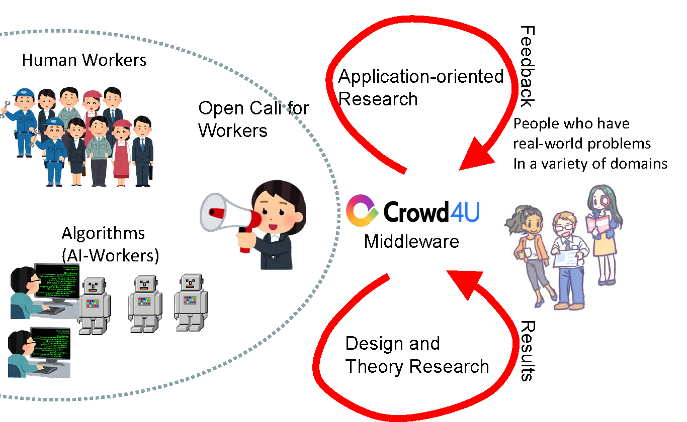

学群3年配属日程(2022年度のもの) 面談・個別訪問は各学類のルールに従います．
重要：知識学類のみなさんへ
10/27(木) 内定枠が埋まりましたので，本日以降の面談のご意向にはそえません．説明会・オープンラボ （過去の説明会動画は説明会登録をするといつでも見ることが出来ます．）
場所：説明会はTeamsを利用する予定です．申し込み用フォームは こちら です．回答後のページにチームへの登録のためのチームコードが掲載されていますので忘れずにメモしてください．忘れてしまった場合は登録し直しますともう一度見れます．
見学：情報メディアユニオン棟3F u305室 研究室への個別訪問は10月末までの10:00～17:00 (12:15-13:15は除く)に間にお越しください．研究室に来たら在室しているスタッフまたは学生に「研究室見学に来ました」とお伝えください．お待ちしてます！
学類ルールの適用について：個別訪問，説明会への参加などは各学類のルールに従ってください．
- 2022年10月 7日 (金) 18:15-19:15 メディア創成対象
- 2022年10月18日 (火) 18:15-19:15 知識学類・メディア創成 対象
- 2022年10月19日 (水) 16:00-17:00 知識学類・メディア創成 対象
- こちらから当日聞きたいことを入力してください． 匿名で質問できますので，ぜひお気軽に入力してください．
面談問い合わせ先 (筑波大学の学群生が対象です．留学生の受験の問合せは下記メールアドレスにお願いします)
研究室配属希望者は要面談です．下記リンクから希望の日時を選択し，面談を予約してください．面談時間は一人30分程を予定しています． 尚, 可能な限り，対面での面談でお願いします．
予定の合う時間帯が無いなど，その他のお問い合わせは以下のメールアドレスにお願いします．
fusioncomplab-staff@ml.cc.tsukuba.ac.jp (森嶋・伊藤）に連絡下さい．
ようこそ！融合知能デザイン研究室へ．
本研究室では，一緒に研究室のビジョンを実現してくれる全ての人を歓迎します． まずは見学や話だけでもかまいません．時期にかかわらず，思いついたらまずはメールでご連絡下さい．本学大学院への進学者・システムやプログラミングに興味がある方は特に歓迎します．- 学群生(1,2年生) どなたでも．早く論文を書いてみたい人，AREに応募したい人，システム開発バイトをしたい人，単にゼミの様子が見たい人，他学類でも誰でも大歓迎です．
- 学群 3年生 (創成学類，知識学類) 研究室配属期間以外でも見学等は可能です．
- 大学院生(修士，博士) ネットワークを通じた人々の行動と機械学習などのAIとの統合，システム開発を通じた現実世界の問題解決に興味がある人， 他大学・他学類からの進学も大歓迎です．
- 留学生 We believe that diversity is a powerful source of innovation. We welcome any person who is self-motivative and believes in the power of the crowd, bigdata and AIs.
研究していること
本研究室では，ネットワークを通じてアクセス可能な数十億規模の人々と機械学習などのAIを上手に組み合わせて，これまで解決できなかったような問題の解決を行なう，すなわち「0を1にする」ための基礎・応用研究を行なっています． 情報分野の研究は，「論文のための研究」「役に立たない研究」 が多いと言われます．本研究室では学生が中心となって，プラットフォームCrowd4Uというミドルウェアを開発し， そのミドルウェアを中心とした「ミドルウェアセンタード・アクションリサーチ」を行なっています． Crowd4UはSDGsが制定される4年前の2011年より，社会をよくするためのプラットフォーム「Crowdsourcing for good」を標榜し，世の中の公共問題，学術分野を対象に研究成果の適用を図ってきました． 同時に，研究の視点からは次の二つを行なうものです．(1)基礎研究を行ない，その結果をミドルウェアに反映させる (2)ミドルウェアを用いて応用研究を行ない，その知見をミドルウェアに反映させる． このループを繰り返すことにより，現実問題と結びついた研究成果，「巨人の肩に乗る」ことによるそれぞれの研究成果の横展開を目指します． トップカンファレンスでの成果発表と現実世界の問題解決を両立させている，数少ない研究室の一つです． メディア掲載
本研究室では，自分たちでシステムを作り，現実世界の問題に適用するというアプローチにより，人々のパワーとAIの統合に関して，社会インパクトの大きな成果を継続して出しています．- NHK NEWS WEB 「オンラインで防災討論会 専門家が”災害への備え”呼びかけ」 2020年7月7日
- 愛媛朝日テレビ スーパーJチャンネル えひめ第一部 「AIと共同で災害状況を把握」 2019年10月10日
- 愛媛朝日テレビ eatニュース 「AIと共同で災害状況を把握」 2019年10月10日
- NHK松山テレビ ひめポン 「“世界初” AIなど活用の訓練」 2019年10月9日
- 愛媛新聞 「愛媛などで国際サイバー防災訓練 ＡＩと世界600人が浸水有無を判断」 2019年10月9日
- NHK愛媛NEWS WEB 「 地でも被害分析 燕市 大学チームと防災訓練」 2018年7月2日
- NHK新潟 「“り災証明書” 交付迅速化を」 2019年6月26日
- ニュースイッチ（日刊工業新聞社） 「未来の災害対応は “ SNS×ドローン×AI ”」 2019年3月11日
- 広報つばめ（燕市広報紙） 「全国初の試み サイバーフィジカル防災訓練」 2018年8月15日
- 新潟日報 「情報技術活用 遠隔地でも被害分析 燕市 大学チームと防災訓練 」 2018年7月2日
- NHK首都圏 NEWS WEB「ネット活用で共有する防災訓練」 2018年07月02日
- 新潟日報「情報技術活用 遠隔地でも被害分析 燕市 大学チームと防災訓練」2018年7月2日
- NHK新潟「災害時の情報共有へサイバー訓練」2018年7月1日
- 読売新聞「被災状況把握にAI活用 富大など 救助作業の効率化期待」 2018.6.27
- 富山新聞（朝刊）「ドローン、SNS、AI駆使 被災状況把握 最速目指す 富大など共同訓練」2018年6月23日
- 新潟日報「来月、３大学研究チーム 燕で全国初の防災訓練」2018年6月22日
- 日刊工業新聞 ＡＩ・ドローンで防災訓練 新潟・燕市と筑波大など、住民連携モデル検証 2018年6月4日
- 日刊工業新聞 筑波大、ＡＩボランティア募集－書誌情報チェック、人と協働で 2017年9月20日
- 京都新聞紙版およびWeb版 AI 図書整理手伝って 同大・筑波大グループ ネットで募集 2017年9月13日
- 静岡新聞 クラウドソーシングでＡＩに業務委託 静岡大など仕組み開発 2017年9月12日
- 日刊工業新聞 筑波大と京大、災害時の曖昧情報などAIで大量記事から検出 2017年6月27日
- Academic Resorce Guide630号 「都道府県総合目録の将来像に関する研究プロジェクト」の始動 2017月2月27日
- 毎日新聞京都版およびWeb版 蔵書検索、システム充実へ ネット上のボランティア募集/京都 2017年2月21日
- 京都新聞夕刊およびWeb版 クラウドソーシングで蔵書検索の精度向上へ 京都府立図書館 2017年2月17日
- カレントアウェアネス-R 京都府立図書館「京都府図書館総合目録ネットワークシステムの充実を図る産官連携プロジェクト」のクラウドソーシングを開始 2017年2月17日
- 産経新聞京都版 蔵書検索の精度アップへ 京都府立図書館、大学や企業と連携 2017年1月11日
オープンな研究室
我々は研究をおこなうのに研究室に閉じこもっていません．ビジョンに共鳴し，志を同じくするトップレベルの共同研究者や協力機関と日々密な連携を行い， 現場に飛び込み，研究を行なっています．募集人数
創成学類3 名, 知識学類5名 (森嶋2名・伊藤3名）
面談問い合わせ先
研究室配属希望者は要面談です。下記連絡先に希望の日時を相談するメールを送ってください。面談時間は一人30分程を予定しています。fusioncomplab-staff@ml.cc.tsukuba.ac.jp (森嶋・伊藤)
主な活動
ゼミ週3時間（研究, 文献調査，開発）, 個別ミーティング週1回, 勉強会随時, 合宿, 国内・海外学会発表
過去の主な進路
大学院進学（情報学 , 情報理工学 , ヒューマニクス）修士終了後の就職先：Amazon Web Servise Japan, 青森放送, ウェザーニューズ, NTT研究所, NTTコミュニケーションズ, NTTデータ, NTTドコモ, オールアバウト, キヤノン, クックパッド、コーエーテクモゲームス, 高校教員(情報科), サイバーエージェント, 新日鉄住金, スミセイ情報システム，ソフトバンク, DMM, トーアエイヨー, 日本NCR, 日本マイクロソフト, Preferred Networks, 日立製作所, PWC, 富士通, みずほ情報総研, Yahoo! JAPAN, 楽天, リクルート，ワークスアプリケーションズ
研究のキーワード
クラウドソーシング
不特定多数の群衆(Crowd)にタスクをアウトソーシングし問題を解決すること．
ヒューマンコンピュテーション
コンピュータだけでは解けない問題，いわゆるAI困難な問題に対して，人間の認知能力・身体能力を計算資源として駆使し，解決をはかること．
研究の進め方
当研究室ではクラウドソーシングプラットフォームCrowd4Uの開発を通じて各々が「基盤となる理論」や「フィールド実践」を研究することが特長です．研究テーマはプロジェクトを引き継ぐ，新たに与えられる，自ら提案するなど様々です．